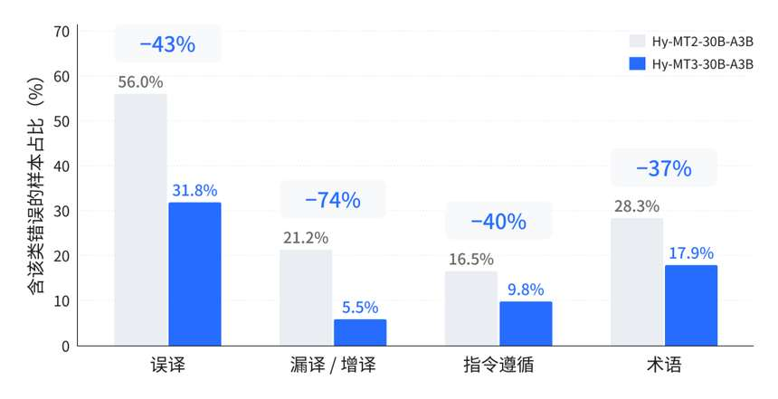
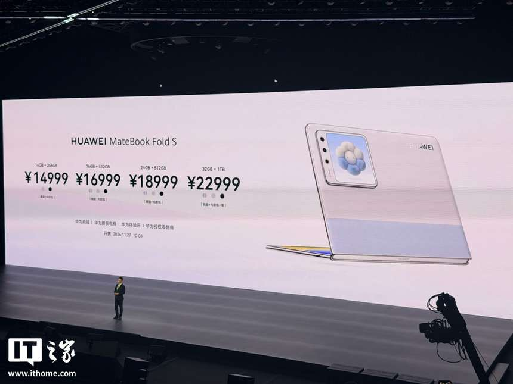
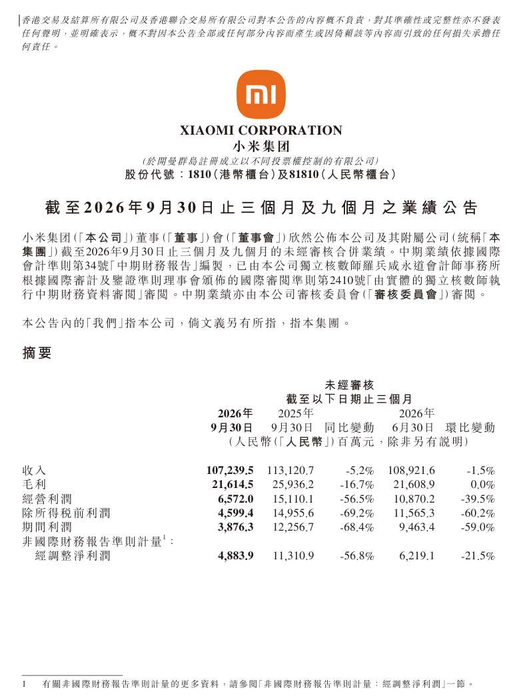
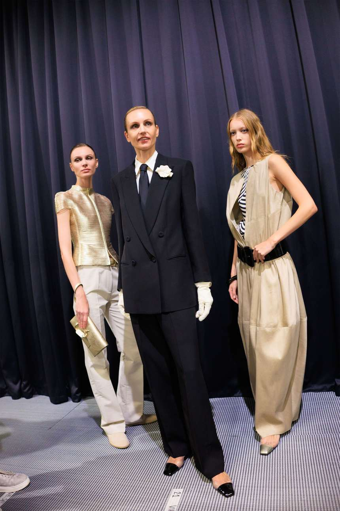
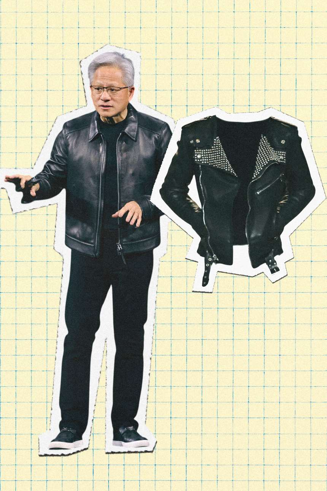
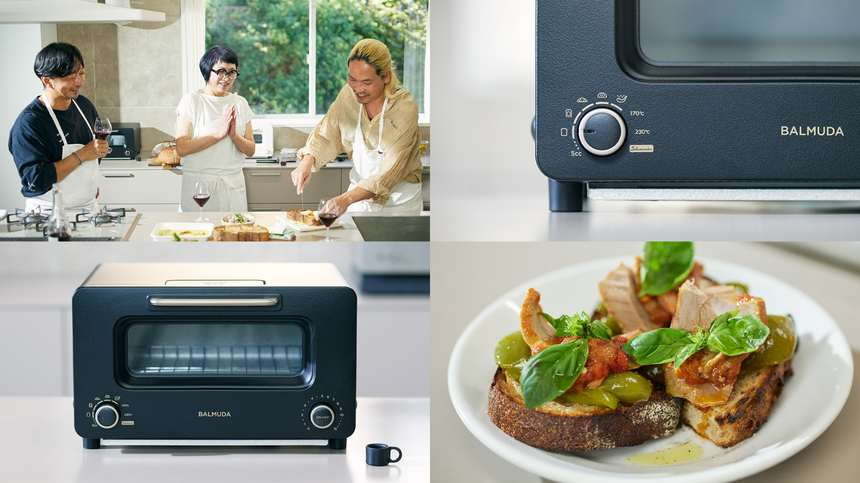
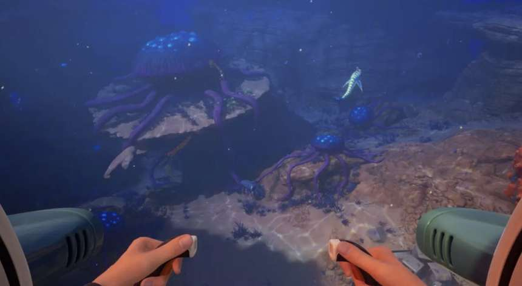

黄仁勋向董事会承认不止一段婚外情并表达悔意，特朗普称其已与妻子和好
四维 80 ≈ 80
黄仁勋承认不止一段婚外情，并向英伟达董事会表达悔意；特朗普方面称其已与妻子和好。今晨「重回 CEO、股价大涨」的剧情补上了内情一角：董事会的震荡与这场「回归」直接相关。
💡 点评：上午市场用 +30% 给「回归」定了价，晚上个人生活的细节才浮出水面——万亿市值公司最高权力层的震荡以「悔意」收场，公司治理层面的追问不会跟着翻篇：独董机制与接班安排才是这场风波真正的长期变量。
IT之家编者按：本份为每日两报新一期晚报，覆盖今天 11:00 ～ 18:00。只取 WB 侧 25 个订阅源 + Tier 0 四家单独检索 + GitHub 当日热榜，全页最高分是今日精选：黄仁勋向英伟达董事会承认婚外情并表达悔意（80）。GitHub 当日热榜 16 仓与今晨午报完全同榜：11 仓近 3 天已报，新面孔 5 仓（CLI-Anything、nginx、openvino、diagram-design、Ghost-Downloader-3）经复查窗口内均无新发版（nginx 最新 release 为 11-23 15:39，非本期窗口），开源章空章。Tier 0 四家（Apple / Sony / DSH / 国内个人助手）本期窗口内均无新节点，全列「本期无更新」。促销新标准（v2.5 §4-3）：命中促销/导购 2 条（华为维感 G1「限时优惠价 299 元」、NNormal 越野鞋 Brutus Best Bets 导购）−10 不乘系数后低于 70，丢弃不上页；华为多款新品为发布带售价、非促销词，正常收录。出卡口径（评分标准 §3）：每主题前 3 名 + 全部 ≥84 出卡；锚点沿用 t-<主题>/c-<主题>-<序号> 新命名。
Tier 0 其余三家：Apple（本期无更新：窗口内无产品与政策新节点）；Sony（本期无更新）；DSH（本期无更新：最新版本仍为 11-22 的 0.2.3-alpha.2）；国内个人助手（本期无更新：豆包「小豆」公测系今晨午报已报，窗口内无新进展；灵光 / 千问 Go! / 腾讯小微无新节点）。
黄仁勋承认不止一段婚外情，并向英伟达董事会表达悔意；特朗普方面称其已与妻子和好。今晨「重回 CEO、股价大涨」的剧情补上了内情一角：董事会的震荡与这场「回归」直接相关。
澳大利亚通过新法案，社交平台用户有权关闭推荐算法，违规企业最高可被处以全球营收 5% 的罚款。

腾讯发布混元翻译模型 HyMT3，官方称翻译结果更准确、更完整、更遵循用户指令，瞄准机器翻译的指令遵循能力。
联合国秘书长古特雷斯呼吁构建 AI 风险管理的多边合作框架，避免技术加剧全球不平等。

华为发布首款鸿蒙小折叠电脑 MateBook Fold S：14.7 英寸 OLED 内屏、麒麟 XE90 芯片，14999 元起，把折叠形态正式带进笔记本品类。

小米公布 2026 年 Q3 业绩：单季营收站稳千亿、研发投入 92 亿元；第三季度新车交付量达 10 万辆。前三季度归母净利润 180.61 亿元，同比下降 48.4%。
消息称京东方与合肥方面会面，探讨整体收购维信诺；若落地，国内 OLED 面板格局将迎来最大一次整合。

Vogue 深度拆解时尚产业 2760 亿美元盘子里正在发生的大规模权力交接：创始一代陆续退场， second-generation 与职业经理人接棒的路线分化。
《黑暗荣耀》戏里戏外情侣档林智妍、李到晛证实结束 3 年恋情，双方经纪公司确认分手。

Vogue 回顾 2026：时尚假货的逼真度跨过临界点，AI 辅助生产让高仿从外观到质感都难以肉眼分辨，行业鉴定体系承压。
ArchDaily 专文论述街道在城市生活中的不可替代性：数字时代远程协作普及，但街道承载的偶遇、商业与公共生活仍是城市价值的核心载体。

BALMUDA 经典蒸汽烤箱 The Toaster 迎来首次全面翻新，人气厨师用新功能演示派对料理，产品设计语言与蒸汽技术同步升级。
NASA 每日一图呈现 NGC 7771 星系群：多个星系在引力 interaction 中互相拉扯，潮汐尾与恒星形成区在长曝光下清晰可见。
NASA 地球观测站卫星影像显示，硫磺岛海底火山喷发使海滩线向外延伸，岛屿仍在生长。
少数派长文记录动荡之后的巴黎街头漫步：从日常街景读一座城市的恢复力与寻常生活的韧性。
《GTA 6》上市以来首个补丁 1.002.002 更新日志公布：修复天气长期不变、自动存档不工作等一批影响体验的 Bug。
为打磨《GTA 6》载具手感，R 星开发团队亲赴纽博格林参加 24 小时耐力赛，用真实赛道经验反哺驾驶模型。

《深海迷航 2》公布首个大型更新「焦油迷航」，12 月 2 日上线，官方 11 月 29 日举行前瞻直播。
普吉岛拉威区新开海景度假村 Chatrium：长尾船跳岛、林投叶编织客房演绎泰式松弛美学，主打海景度假动线。